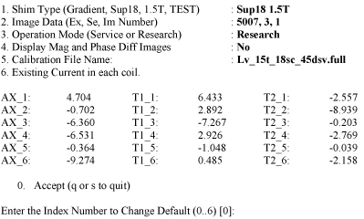
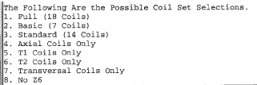

Operating Documentation
Direction 5133330-3, Rev# 14
Signa EXCITE HD 3.0T Service Methods
Module Version 1.0, Version Date 5/3/07
Operating Documentation |
| Required Persons | Preliminary Reqs | Procedure | Finalization |
|---|---|---|---|
| 1 | Not Applicable | 1 hour | Not Applicable |
Content in this section consist of: Scan Prep and Scan and Rough Shim Analysis.
The objective is to improve the homogeneity to the point where Grafidy and other calibrations can be performed. Use the three-piece LVshim phantom and the LVshim PSD with a starting bandwidth range of 2000 - 5000 Hz. The Rough shim process continues until the sampling diameter has been increased to 45-cm DSV (40-cm DSV for CRM ZOOM Body Coil) and the bandwidth decreased to 1000 Hz. In most cases this should take about 3 iterations.
Rough LVshim is normally needed at new sites that have never been shimmed before. If your site has previously been shimmed with LVshim, Quickshim, or CSI Shim, you should skip Rough LVshim and begin with Main LVshim. Rough Shim needs a starting point to work. For a new magnet installation, the magnet ATR shim currents are used for Rough LVshim. The ATR shim currents can be used for all magnet types except S-III with Magnishield.
For the LCC Magnet, the cryocooler coldhead must be turned off for 10 minutes before installing the ATR shim currents. This is due to magnetic flux build-up within a superconducting shield around the coldhead sleeve during magnet ramping. Also, the helium vessel pressure must be at 4.0 psi ± 0.3 psi. Failure to scan at the proper pressure will result in erroneous data collection. Refer to LCC Vessel Pressure Controlfor methods to increase vessel pressure during shimming.
| Item | Qty | Effectivity | Part# | Manufacturer | |
|---|---|---|---|---|---|
| · LVShim Phantom Assembly | 1 | 3.0T | 2360054 | - | |
| Nesting Plate Assembly | 1 | - | 2125247 | - | |
| ||||
| POISON HAZARD! | ||||
| 1.5T Phantoms CONTAINS NICKEL, A SUSPECT CARCINOGEN. | ||||
| DO NOT INGEST! DISPOSE OF AS A HAZARDOUS WASTE ACCORDING TO STATE AND FEDERAL REGULATIONS. |
| ||||
| POISON HAZARD! | ||||
| 3.0T Phantoms CONTAINS Silicon Oil. | ||||
| DO NOT INGEST! DISPOSE OF AS A HAZARDOUS WASTE ACCORDING TO STATE AND FEDERAL REGULATIONS. |
Phantom Setup:
Remove the Quad head Coil from the cradle and remove any other phantoms from the bore.
Setup and align the LVShim phantom per Illustration 1.
Illustration 1: ALIGNING LVSHIM PHANTOM ON PATIENT TABLE

Press <Advance to Scan>.
At the operator workspace, select the scan icon in the desktop control panel and set up LVshim scan as follows:
At the Host Computer, prepare the system for LVshim Scan.
Click <Auto Prescan>. Make sure TG is between 130 and 160. If Auto Prescan fails, attempt Step 4, otherwise skip to Step 6.
[Click Manual Prescan]
While in the [Center Freq. Fine (CFH)] mode, verify that the frequency peak is centered in the display. Center frequency peak as necessary. After locating the best signal, open the Frequency menu at the top of Manual Prescan window and select [Save Frequency] to save the new center frequency.
Click [Transmit Gain (TG)], open the Markers menu at the top of the Manual Prescan and select [Horizontal Hairline]. Adjust Transmit Gain for the highest value. TG should be between 130 to 160.
| NOTE: | The TG needs to be adjusted correctly after performing Auto Prescan. Auto Prescan sets the TG for this phantom too high which results in the RF being overdriven and will produce NaN (Not a Number) in the LVshim analysis. Typically the TG will maximize at approximately 20 counts less than the Auto Prescan setting when adjusted in Manual Prescan. |
Click [Scan TR (R1/R2)]. Verify that R1 and R2 are not over ranged. Adjust R1 and R2 for approximately 50%.
Click [Done] to exit Manual Prescan.
When finished with prescan, Click [Scan].
If Auto prescan is used, check TG and make sure TG is between 130 to 160.
| NOTE: | The annotation on the LVshim images is not correct and does not change. The scan plane is driven by the LVshim PSD, not through scan prescription. Therefore, the software that is responsible for the image annotation doesn't know about the plane changes and keeps the annotation at the first plane. The images are in the correct plane and orientation; however, the annotation does not reflect this. |
At the Host Computer, go to the Service Desktop and open the Service Browser, if it's not already running.
Start the LVShim tool from the Service Browser as shown inIllustration 2.
Illustration 2: Starting The LVShim Tool From The Service Browser

For TwinSpeed, highlight Whole and click OK. Proceed as follows.
The menu shown in Illustration 3 should appear in a c-shell window once the LV-Shim tool has been started.
Illustration 3:

Change the following parts to calculate the next set of currents while performing Rough LV Shim
Shim Type should be set to the supercon shim set appropriate for the magnet type. Type 1<Enter> until the correct set is displayed.
Image Data should show the Exam, Series and the first Image number of the previously scanned LV Shim series. Type 2<Enter> and change if necessary.
Operation Mode should be set to Service. Type 3<Enter> until this is listed correctly.
Display Mag and Phase Diff Images should be set to No. Type 4<Enter> until this is listed correctly.
The calibration file should list the correct configuration file to use. Type 5<Enter> to view possible filed. You can view detailed information on these files in the LV Shim Software **(Link)** document.
The existing current in each coil should match the currents set in each coil from the previous iteration (or the initial currents). Type 6<Enter> and modify the currents if necessary.
Once the LV Shim Analysis tool is setup correctly as shown in Step 5, type 0<Enter> to run the analysis.
If image phase wrap was detected, the following message appears: “Excessive phase wrapping….Please re-scan at Wider Bandwidth or smaller test diameter”. If this occurs, return to Scan Prep and Scan and rescan and a greater bandwidth.
A output as shown in Illustration 4 should appear (Bandwidth, Exam, Series and Image # will match the LV Shim series under analysis):
Illustration 4: Output Details

If “NaN” is displayed in the Harmonic Coefficient data, you should return to Scan Prep and Scan and rescan. Make sure the TG value is between 130 and 160.
Enter Comments as desired. Once comments are entered, the out put as shown in Illustration 5 will displayed (# of coils/options vary depending on magnet type):
Illustration 5: Coil Selection

Select coil set that you would like to use to improve the magnets homogeneity. Refer to the correct magnet documentation for details on coil sets to use. Enter in the appropriate value.
Once the shim current set is entered, then each coil will be presented with Existing, Delta and New currents. See Illustration 6 for an example when the full 18 coils were chosen.
Illustration 6: Shim Current Settings Example

You are given the option to select a different coil set, if you do, return to Step 11. Otherwise, you can modify, reject or accept the new currents. If you reject the currents, you do not have to enter any current in the magnet and the previous currents are saved in LV Shim as the actual currents. If you modify and/or accept and install the new currents, then these currents are saved in LV Shim as the actual currents. Use the magnet documentation on directions to burn in these currents as it varies between magnet types.
If the currents were rejected because the Rough Shim is complete, then exit LV shim by typing N<Enter> when prompted to run LV Shim Again.
If you accepted the new currents, type Y<Enter> once the new currents have been burned into the coil to continue run LV Shim again.
Return to Scan Prep and Scan and use the suggested bandwidth. Continue iterating Rough Shim until the suggested bandwidth is equal to or less than 1000Hz and the DSV analyzed is 45 cm for BRM/TRM or 40cm for CRM.
No finalization steps.